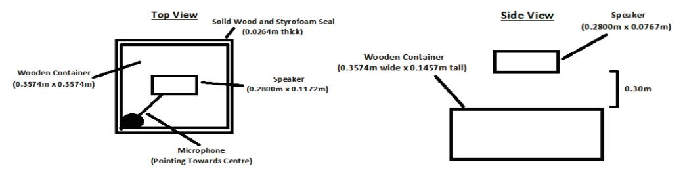
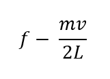
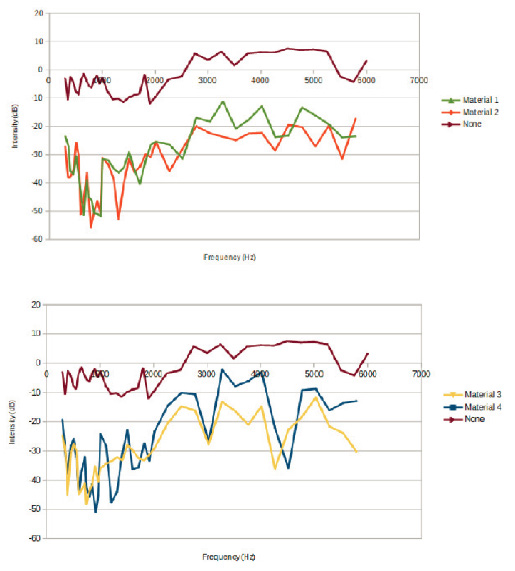
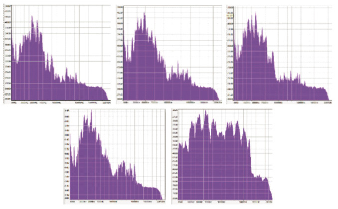

BackgroundLinking angiogenesis and brain neurogenesis/gliogenesisAssessing the therapeutic potential of Prmt1 targeting in vitroPrmt1 and its effects on neurogenesis/gliogenesis in a murine model of Vascular DementiaReferences
Abstract
The aim of the present experiment was to study the transmission of sound through a building by means of replicating a small-scale model of a floor and ceiling apparatus. Therefore, the relationship between input sine wave frequency and sound intensity through a closed apparatus was analyzed. The sound absorbance of various sound insulating materials was compared, and resonance properties of the apparatus was also considered. Sound intensity trends were investigated for frequencies within the human hearing range (up to the order of magnitude of 10,000 Hz), and different soundproofing material types (porous absorbers and resonators) were compared. It appears that the input sound wavelength (relative to the container size), as well as sound absorption coefficient were both major factors in transmitted sound’s intensity. Porous absorbers were found to be the most robust material type at both resonance and non-resonance modes, and the optimal soundproofing material was the stone wool insulator (Material 2).
Introduction
Excessive noise is a common hurdle encountered in the field of building design, whether it be for office-spaces or apartment complexes. Sound insulators are materials that are frequently used to absorb, dissipate, or reflect sound waves as it moves through a medium (Hawkings, 2014), and so the implementation of soundproofing in buildings is of practical use. The purpose of this experiment was to provide a comprehensive study of sound transmission through an apparatus (of varying material type) at different input frequencies. A wooden container was designed with the purpose of modelling the structure that commonly separates the floor and ceiling in most buildings. Four different materials were individually compared against a control group, where no sound barrier was used. Materials 1 and 2 are both a type of insulator called porous absorbers, with Material 1 being a more slightly more inflexible variety of porous absorber. Like resonators, porous absorbers allow air to flow into a cellular structure where sound energy is converted to heat (Hawkings, 2014). Materials 3 and 4 are both a type of sound insulator called resonators, which act by trapping air in a chamber, either by the grooves in Material 3 or the negative space in Material 4, which compresses the sound wave to absorb energy (Hawkings, 2014). The key difference is that resonators trap air in long chambers, such as in a Helmholtz resonator, while porous absorbers have multiple small cavities in which to make the conversion. Furthermore, porous absorbers are much more pliable than resonators, which tend to be stiff, inflexible, and more capable of “resonating” with the incoming sound wave.

Fig. 1: design of experimental apparatus: the sound-proofing material fits on top of a receded indent on top of the wooden container, and fixed between two layers of plywood and above one layer of drywall to simulate a traditional construction set-up; the microphone was sus-pended in the centre of the container
Methods
The ability of the different sound insulators to prevent the transmission of sound was tested at a range of frequencies. Pure sine waves with frequencies ranging from 300 Hz to 5,750 3 Hz were generated by a speaker connected to a computer, as shown in Figure 1. Three commercial sound insulators (Materials 1, 2, and 3) as well as a sheet of drywall (Material 4) were individually compared against a control group, which consisted of a trial that lacked any sound barrier. The sound intensity was measured for each respective material at 50 Hz intervals from 300 Hz to 1000 Hz, 100 Hz intervals from 1,000 Hz to 2,000 Hz, and 250 Hz intervals from 2,000 Hz to 5,750 Hz. White noise was also used to qualitatively observe the sound intensity behaviour of each material at frequencies greater than 5,750 Hz. Uncertainties were determined by taking ten measurements each at 500 Hz, 2,000 Hz, and 4,500 Hz, and calculating the standard deviation of those values. The relative uncertainties were then calculated and extrapolated to other measurements.
Results
As shown in Figure 2, the sound intensity for each material was recorded for specific input sound frequencies. The sound intensity difference between each trial and the control group can be interpreted as the magnitude of sound blocked by the material, which will subsequently be referred to as sound reduction. From 300 Hz to approximately 2,000 Hz, it appears the magnitude of sound reduction for each trial decreases. From approximately 2,000 Hz to 6,000 Hz, the magnitude of sound reduction appears to stay relatively constant. The standard deviation was calculated to be 1.07 Hz at 500 Hz, 2.20 Hz at 2000 Hz, and 0.77 Hz at 4500 Hz. (bottom) compared against the control (n = 40). White noise graphs (Figure 5) were created to validate the sound intensity measurements in Figure 2, as well as to gain a broader perspective of sound intensity trends at higher frequencies. White noise consists of generating a wide range of frequencies at equal intensity, and so the measured sound intensity is what sound remains after being transmitted through the soundproofing material. The sound intensity is relatively constant for all frequencies in the control group. Conversely, each soundproofing material appears to allow for significantly less sound transmission at frequencies on the order of magnitude of 10,000 Hz, when compared with the control.
In Figure 4, it is also apparent that there is a fluctuation in sound reduction as a function of input frequency, thereby creating ‘local minimums’ and ‘local maximums’ in the plotted graph. By separating the material types in Figure 2 (porous absorbers versus resonators), it is apparent that there is a material dependency on the magnitude of intensity difference between local extrema. Materials 3 and 4 (resonators) appear to fluctuate more over the frequency range, while the intensity of Materials 1 and 2 (porous absorbers) varies less. Additionally, all materials in Figure 4 appear to arrive at regularly occurring local minimums at intervals of roughly 500 Hz.
Discussion
The trends in overall sound reduction (Figure 2) can be explained by two separate factors: the wavelength of the input sound (relative to the size of the apparatus), and sound dampening by the material itself. At low frequencies, the wavelength of the sound is much longer than the size of the apparatus, and so it should interact with it less, as dictated by Huygens’ principle (Encyclopaedia Britannica, 1998). During the experimental trials, a portion of the waves were likely not absorbed by the apparatus, and so did not translate into the 2D sound waves for the microphone to detect. Therefore, a higher proportion of low-frequency sound waves would have been detected by the microphone in open air for the control trial, compared with those that have a material covering the apparatus.
The addition of a soundproofing material requires that another major factor be taken into consideration. The sound absorption coefficient of each respective material, as described by Hawkins (2014), dictates that a material absorbs a certain percentage of the total energy of the sound wave Hawkins (2014). This defined fraction of energy should equate to a greater overall magnitude of absorption for high frequency waves, as the total energy of a wave is proportional to frequency.
Therefore, high frequency sound waves have a decreased chance of being reflected from the closed container (as dictated by its wavelength relative to the container), but will have a greater total magnitude of energy absorbed by a material (as dictated by the sound absorption coefficient). It appears that the high reduction of sound for materials at the low frequency range (from 300 Hz to approximately 2,000 Hz) can be explained by the relative wavelengths of the input sound, and container size. However, for the higher frequency range (approximately 2,000 Hz to 6,000 Hz), more wave energy can be transmitted into the container, but a greater magnitude of wave energy is also absorbed by the material – thus leading to a relatively constant reduction in sound. Finally, as confirmed by the white noise graphs in Figure 3, the sound reduction further increases for frequencies on the order of magnitude of 10,000 Hz, as the material absorbs an increased total amount of sound, and thus appears to be the dominant factor at this frequency range. It appears that the magnitude of reduced sound fluctuates as a function of input frequency, and local minimums are found at regular intervals. The fluctuation of sound reduction may indicate the presence of resonance modes, which can be supported through calculation as standing waves in a fixed system have frequencies of:

In the experimental conditions (dry air at 22oC), the speed of sound is 344.82m/s (Georgia State University, 2000), and so the fundamental frequency should theoretically exist at 520.88 Hz, with resonance modes existing at integer multiples of this value. Therefore, the fluctuation of sound reduction is likely due to resonance modes created by the geometry of the container itself.
The sound reduction graph appears to have local minimums that exist approximately every 500 Hz. Additionally, it appears that the magnitude of reduction difference between resonance and non-resonance modes is correlated to the material type. As shown in Figure 2, this reduction difference is minimized for absorbers (Materials 1 and 2), and maximized for resonators (Materials 3 and 4).
The difference in how each material interacts with resonance modes can be attributed to the structural differences in material type. When resonators interact with sound waves, the rigid material bends, thereby causing an oscillation which propagates waves equal to the input frequency (Hawkings, 2014). If the apparatus resonates with a wave that exists at an integer multiple of the fundamental frequency, then it will constructively interfere with the standing waves created by the geometry of the apparatus. If not, then the two waves would destructively interfere. Therefore, the differences between in-phase and out-of-phase waves are highly apparent with resonators. As can be observed in Figure 4, the sound reduced is frequently minimal at what appears to be resonance modes of the container.
Conversely, porous absorbers are more flexible in nature and hence more likely to change shape when sound waves propagate through it. As sound waves travel through the material, longitudinal waves press the absorber towards the lid of the container. Then, as the wave travels out of the absorber, it causes the material to decompress. The cyclical action of compression and expansion would cause a component of the oscillation to be in the horizontal direction, therefore redirecting sound waves away from the container. The deflected energy of the sound waves would therefore be lost, regardless of whether the frequency is at a resonance mode of the container not. As more energy is lost due to horizontal deflection (relative to the resonator material type), the sound reduction difference of resonance and non-resonance modes would be less distinct. This supports the findings in Figure 2, where the porous absorbers reduce sound much more consistently than the resonators.

Fig. 2: sound intensity measurements (dB) of differ-ent frequency waves (Hz) propagated through porous in-sulators (top) and resonators (bottom) compared against the control (n = 40)

Fig. 3: intensity graphs of white noise propagated through various media; from top left to bottom right, the materials are Material 2, Material 1, Material 3, Mate-rial 4, and the control (‘lidless’) trial; frequency is plotted on the x-axis, in s-1, and intensity is plotted on the y-axis, in decibels; intensity not to scale
Conclusion
The fluctuation of sound intensity as a function of frequency appeared to be due to the effect of resonance modes created within the apparatus. Porous insulators were found to be more effective than resonators at minimizing the sound reduction fluctuation between resonance and non-resonance modes. The increased reduction of sound at low frequencies may be due to the input wavelength being longer than the container, thereby preventing it from being transmitted through it. Meanwhile, the increased reduction at high frequencies is likely due to the absorption by the material itself, as defined by the sound absorption coefficient. The optimal sound insulator was the stone wool insulator (Material 2), due to its capabilities at non-resonance modes (due to its material type), and overall superior sound absorption relative to Material 1. Future studies may include building a larger apparatus in order to better extrapolate results to real-life structures.
References
Encyclopaedia Britannica (1998). Huygens’ principle. https://www.britannica.com/science/Huygens-principle. Accessed March 25, 2017.
Georgia State University (2000). Speed of sound in air. Hyperphysics. http://hyperphysics.phy-astr.gsu.edu/hbase/Sound/souspe.html. Accessed March 09, 2017.
Hawkins, K. (2014). Studies and research regarding sound reduction materials with the purpose of reducing sound pollution. Cal. Polytechnic State Uni. USA 1, 1 – 41.